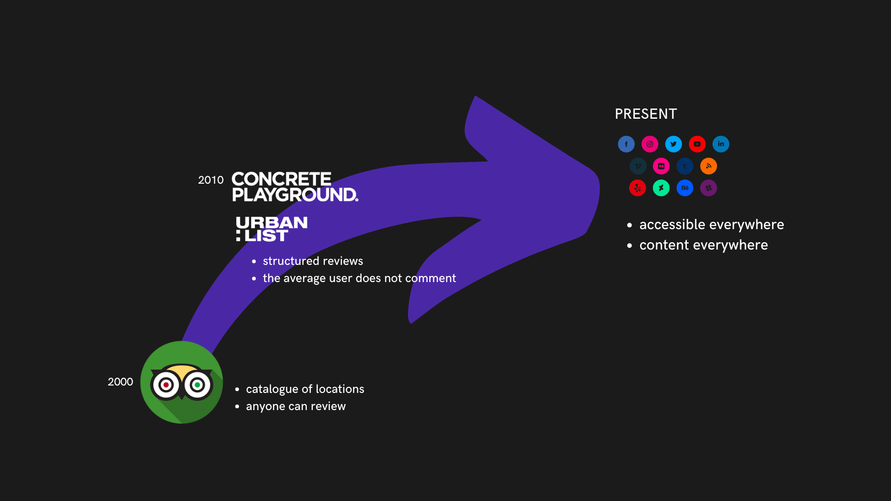
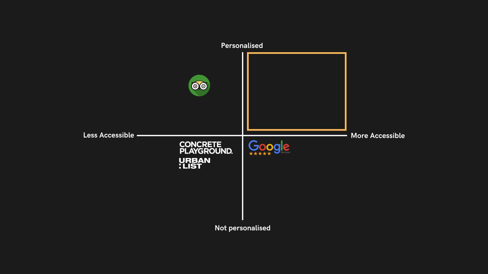
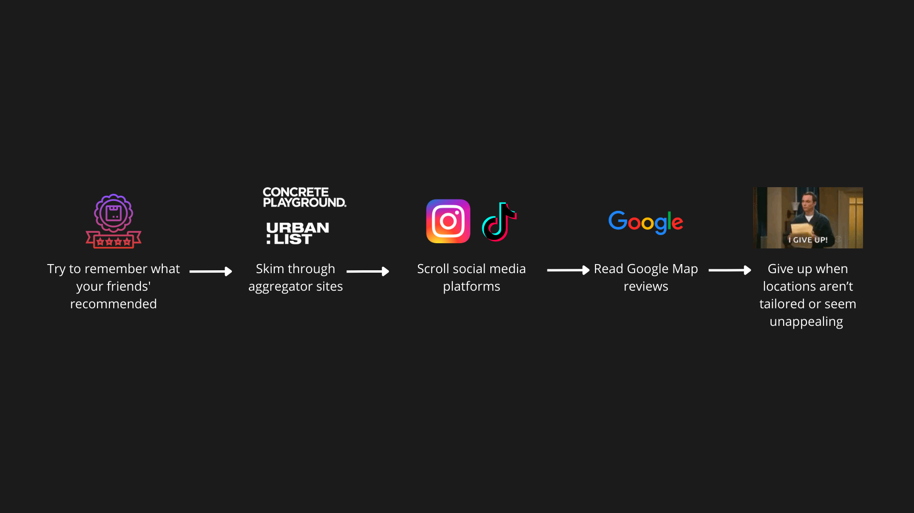
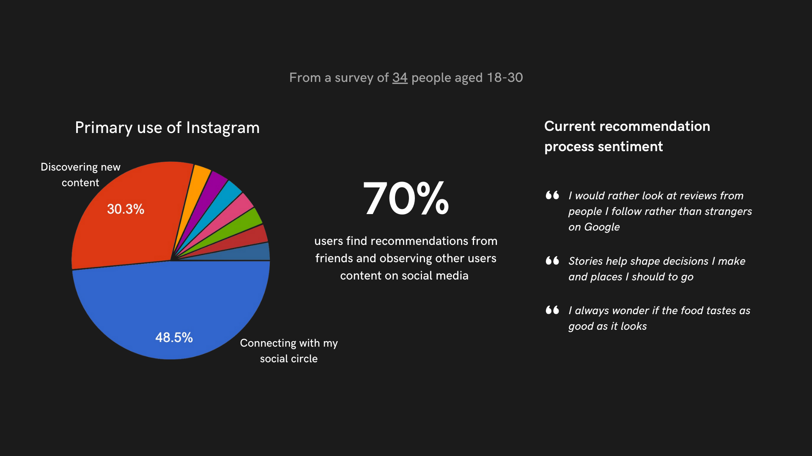

Location Review
Context
Prodigi x Canva Productathon
WINNER
Team
Qiyu Huang - BA
Rexana Jiang - Designer, PM
Nikki Yao - Designer, PM
Key Themes
Discovery, UX Design
Period
01.04.22 - 03.04.22
Introduction
The overarching challenge for us was to design a new in-app editing feature that would boost higher engagement within a social media platform. View the spec
A New Culture
As we have progressed to the age of digital and Internet culture, many resort to the Internet to find recommendations for places to visit such as restaurants and landmarks.
However, with so much information available to us, decision making becomes harder. People want a quick, easy and personalised way to find their recommendations.
The Market Gap
Existing competitors have long informed and recommended digital users of best places to go to.
TripAdvisor brings a personalised experience - allowing users to find places through filtering. On the other hand, Google is the platform of the highest traffic - but not necessarily personalised, as the top searches are influenced by SEO.
So where’s the platform that is personalised and accessible?
Instagram might just be THE discovery platform.
Why Instagram?
For accessibility - Instagram is one of the most used social media platforms with 2 billion active monthly users.
As for personalisation - users follow people they trust and whom’s opinion they value.
Designing a new feature will strengthen Instagram’s position as one of the leading social media platforms.
And as a team, we asked ourselves ...
To answer this question, we leveraged user research to help us gather insights pertaining to our target audience and the market space.
The Current User Journey
Meet a section of our demographic. This is how they currently find a new place to eat.
As you can see, the journey involves many platforms and is long and cumbersome.
User Research
Key Pain Points
We gather the 3 key pain points:
1. Reviews by strangers are less favoured compared to people they follow
2. There are too many platforms for recommendations
3. Search results are not personalised content relevant to their interests
This feature will elevate the in-app editing experience for users giving them a new way to share their moments. Not only that, it will also bring attention to an existing feature: Saved Locations. We want users to have more reasons to be consistently engaging and interacting with Instagram in different ways.
For a story, you can select our Location Review sticker. Then pick the location, rate it and add a comment. You can customise it, then it’s ready to be posted! Only people who follow you will be able to see these stories. This allows users to actually see content they want to see and accounts they want to engage with.
For a post, after going through the normal steps of selecting a photo and a location, an option to rate it will appear. After posting it, the rating will show beside the location tag. Clicking on the location tag will take you to another page where all the posts that have tagged the location will appear. All individual posts will display the star rating the original poster has decided on. An average rating from all Instagrammers is also shown.
You can see reviews made by the people you trust, all centralised on a single platform and relevant to you.
Pitch Feedback
- Solution clearly addressed the problem and was very feasible for instagram to implement and for users to adopt
- Design was user friendly and felt familiar to interface
- Great way of fostering connection between users and businesses
- Could have been taken a step further with adding folders & sorting functions to help people manage the things that they saved. The problem was around enabling peer to peer recommendations and while the solution directly addressed enabling users to share recommendations, not as much consideration was given to users that were seeing the recommendations
- Would recommend leveraging existing components such as the location tag instead of building a new sticker (to help with discoverability and avoid inconsistencies)
- Solution clearly addressed the problem and was very feasible for instagram to implement and for users to adopt
- Design was user friendly and felt familiar to interface
- Great way of fostering connection between users and businesses